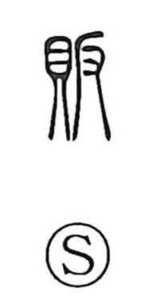

販

Uncategorized
Kun: hisagu, uru | On: han
to sell ・ to deal in ・ marketing
Explanation
Formed as a phono-semantic compound: 貝, the shell money that signals valuables and exchange, provides the meaning, while 反 serves as the phonetic giving the on-reading han. Classical glosses define it as the practice of buying cheaply and selling at a higher price—trade pursued for profit—and the character is used in the senses hisagu and uru, “to deal in, to sell.” The Zhou Rites portrays the daily rhythm of the markets—morning trade in the morning market, evening trade in the evening one—with the peddlers (販夫, 販婦) at the center, evoking goods taken in early and sold later that same day.